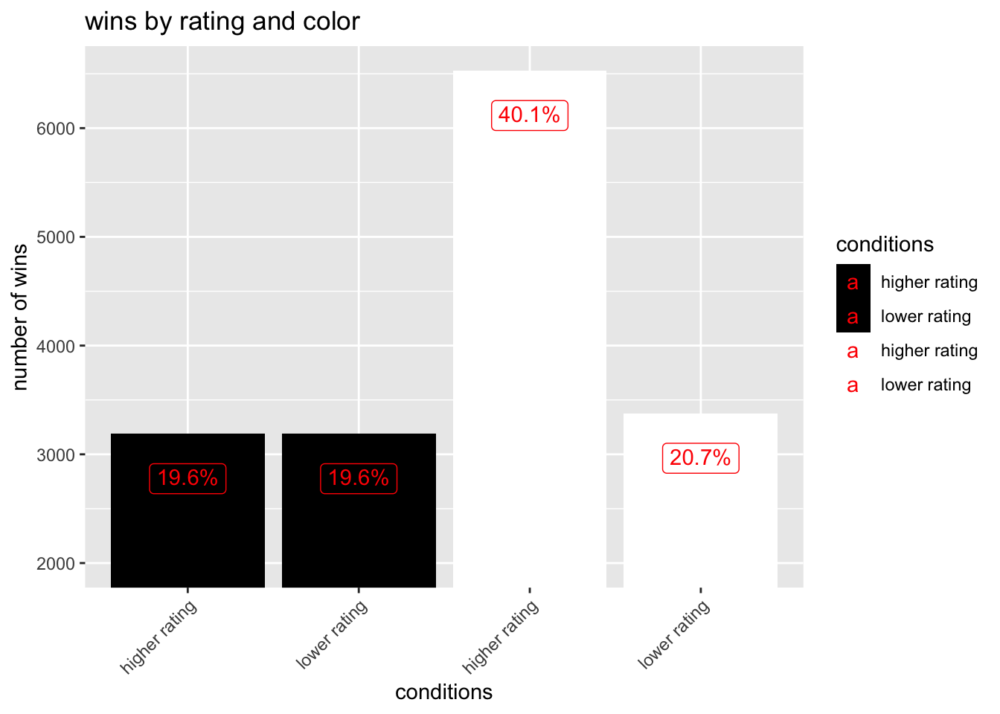
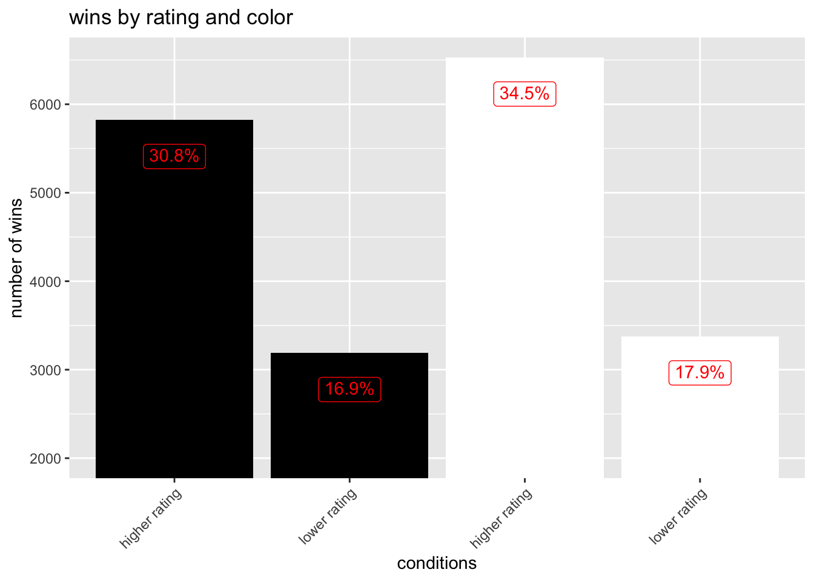

# isolate wins based on color and rating
chess_new <- chess %>%
mutate(
white_win_higher_rating = case_when(
winner == "white" & white_rating > black_rating ~ TRUE,
TRUE ~ FALSE
),
white_win_lower_rating = case_when(
winner == "white" & white_rating < black_rating ~ TRUE,
TRUE ~ FALSE
),
black_win_higher_rating = case_when(
winner == "black" & white_rating > black_rating ~ TRUE,
TRUE ~ FALSE
),
black_win_lower_rating = case_when(
winner == "black" & white_rating > black_rating ~ TRUE,
TRUE ~ FALSE
))
# summarize the counts in a new dataframe
counts_summary <- chess_new %>%
summarize(
white_win_higher_rating = sum(white_win_higher_rating == TRUE),
white_win_lower_rating = sum(white_win_lower_rating == TRUE),
black_win_higher_rating = sum(black_win_higher_rating == TRUE),
black_win_lower_rating = sum(black_win_lower_rating == TRUE)
)
# pivot long so we can plot
counts_summary_long <- counts_summary %>%
pivot_longer(cols = everything(),
names_to = "conditions",
values_to = "count")
# calculate percentages
counts_summary_long <- counts_summary_long %>%
mutate(percentage = count/sum(count) * 100) %>%
mutate(percentage = paste0(round(percentage, 1), "%"))chess_website
I want to see how often black and white win, and whether rating has anything to do with it
# vector for fill colors
bw_vector <- c("black", "black", "white", "white")
counts_summary_long %>%
ggplot(aes(x = conditions, y = count, fill = conditions)) +
geom_col() +
coord_cartesian(ylim = c(2000, NA)) +
theme(axis.text.x = element_text(angle = 45, hjust = 1)) +
ylab("number of wins") +
scale_x_discrete(labels = c(
"white_win_higher_rating" = "higher rating",
"white_win_lower_rating" = "lower rating",
"black_win_higher_rating" = "higher rating",
"black_win_lower_rating" = "lower rating")) +
scale_fill_manual(values = bw_vector, labels = c(
"white_win_higher_rating" = "higher rating",
"white_win_lower_rating" = "lower rating",
"black_win_higher_rating" = "higher rating",
"black_win_lower_rating" = "lower rating")) +
geom_label(aes(label = percentage), vjust = 2, color = "red") +
ggtitle("wins by rating and color") 
(now just to see what a pie chart looks like…)
custom_labels <- c("black higher rating", "black lower rating", "white higher rating", "white lower rating")
counts_summary_long %>%
ggplot(aes(x = "", y = count, fill = conditions)) +
geom_bar(stat = "identity", width = 1) +
coord_polar("y") +
theme_void() +
geom_text(aes(label = percentage),
position = position_stack(vjust = 0.25), color = "white") +
scale_fill_manual(values = wes_palette("GrandBudapest1", n = 4), labels = custom_labels)